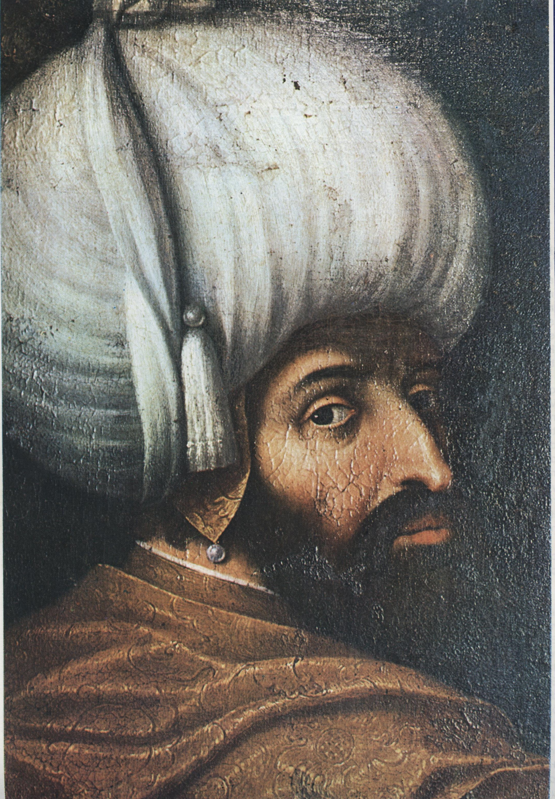

| önceki |  |
sonraki |
I. Bayezid (Yıldırım Bayezid), Osmanlı İmparatorluğu'nun dördüncü padişahıdır. Babası I. Murad (Hüdavendigâr), annesi Gülçiçek Hatun'dur. Savaş meydanlarındaki süratli intikalleri, ordusunu olağanüstü bir hızla bir cepheden diğerine sevk etmesi sebebiyle "Yıldırım" lakabını almıştır. Anadolu Türk siyasi birliğini geniş ölçüde sağlayan ilk padişahtır.
Padişahlık Öncesi ve Tahta Çıkışı
Şehzadeliğinde Kütahya sancakbeyliği yapmış, Germiyanoğulları Beyi'nin kızı Devlet Şah Hatun ile evlenerek çeyiz yoluyla Germiyan topraklarının büyük kısmını Osmanlı'ya katmıştır. 1389'da I. Kosova Muharebesi'nde ordunun sağ kanadını yöneterek zaferde kilit rol oynamış; babası I. Murad'ın savaş alanında şehit edilmesi üzerine tahta geçmiştir.
Büyük Zaferleri ve Saltanatı
- Niğbolu Meydan Zaferi (1396): Macar Kralı Sigismund önderliğindeki Fransız, İngiliz ve Alman şövalyelerinden oluşan devasa Haçlı ordusunu Tuna kıyısındaki Niğbolu Kalesi önünde imha etmiştir. Bu muazzam zafer sonrası Kahire'deki Abbasi Halifesi, I. Bayezid'e "Sultân-ı İklîm-i Rûm" (Anadolu ve Rum Diyarının Sultanı) unvanını tevcih etmiştir.
- İstanbul Kuşatmaları ve Anadolu Hisarı: İstanbul'u (Konstantiniyye) tarihte ilk kez ciddi şekilde abluka altına alan Osmanlı padişahıdır. Boğaz'dan Bizans'a gelecek Karadeniz yardımlarını kesmek amacıyla Boğaziçi'ne Anadolu Hisarı'nı (Güzelcehisar) inşa ettirmiştir.
- Anadolu Türk Birliğinin Kurulması: Saruhan, Aydın, Menteşe, Germiyan ve Karamanoğulları beyliklerine son vererek Fırat Nehri'ne kadar uzanan Anadolu topraklarını tek bayrak altında birleştirmiştir.
- Ankara Muharebesi ve Esaret (1402): Timur İmparatorluğu ile Çubuk Ovası'nda yapılan çetin muharebede, Kara Tatar ve Anadolu beylik askerlerinin saf değiştirmesi sonucu yenilmiş ve Timur'a esir düşmüştür. Esaret altındayken 1403'te Akşehir'de vefat etmiştir. Bu mağlubiyet, devleti 11 yıl sürecek Fetret Devri'ne sürüklemiştir.
- Mimari Mirası: Niğbolu zaferinin şükranı olarak Bursa'da 20 kubbeli şaheser Bursa Ulu Camii'ni inşa ettirmiştir.
Ailesi
- Eşleri:
- Devlet Şah Hâtûn (Germiyanoğlu Süleyman Şah'ın kızı, İsa Çelebi'nin annesi)
- Devlet Hâtûn (I. Mehmed Çelebi'nin annesi)
- Olivera Despina Hâtûn (Sırp Prensi Lazar'ın kızı)
- Hafsa Hâtûn (Aydınoğlu İsa Bey'in kızı)
- Angelina Hâtûn
- Erkek çocukları:
- Süleyman Çelebi (Rumeli Hükümdarı)
- İsa Çelebi (Balıkesir ve Bursa Emiri)
- Musa Çelebi (Rumeli Hükümdarı)
- I. Mehmed Çelebi (Osmanlı Padişahı)
- Mustafa Çelebi (Düzmece Mustafa)
- Şehzade Ertuğrul Çelebi
- Şehzade Kasım Çelebi
- Şehzade Yusuf Çelebi
- Şehzade Hasan Çelebi
- Kız çocukları:
- Fatma Sultân
- Erhundu Sultân
- Hundi Sultân (Emir Sultan'ın eşi)
- Öruz Sultân
- Paşa Melek Sultân
Yıldırım Bayezid hakkında daha fazla bilgi için buraya tıklayın.